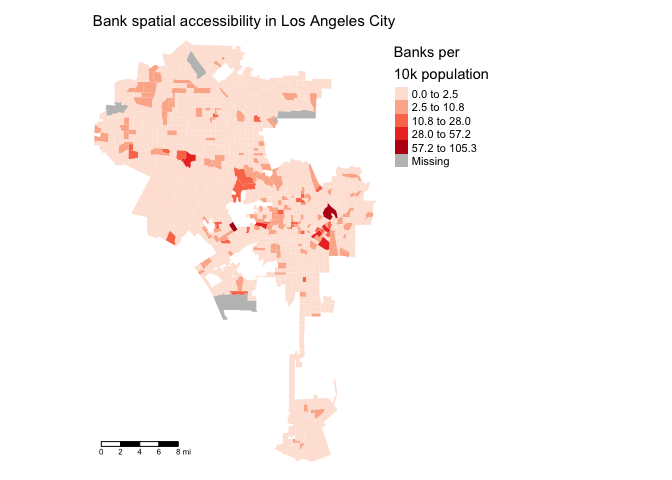
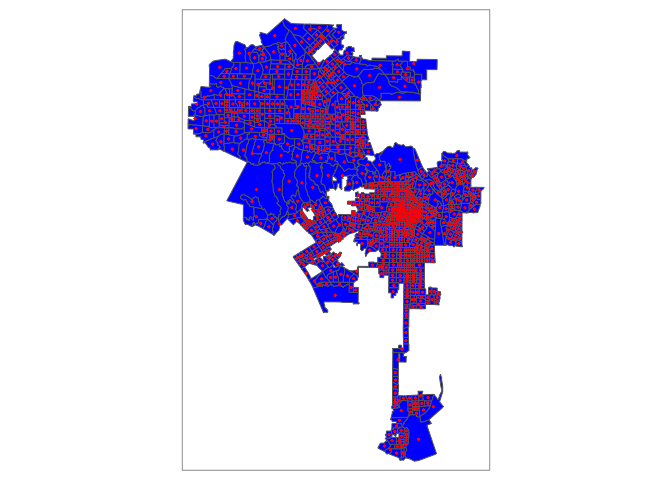
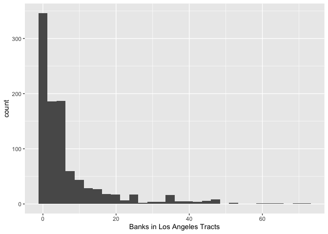
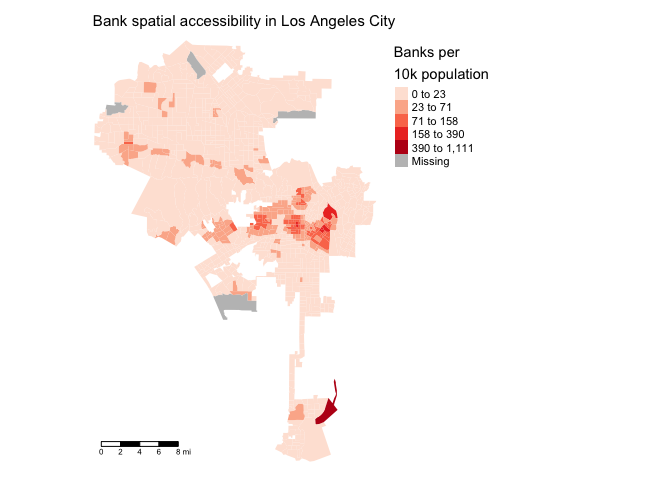
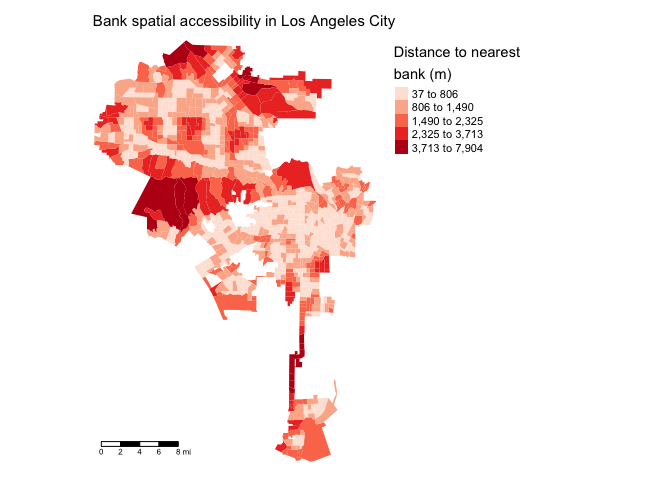
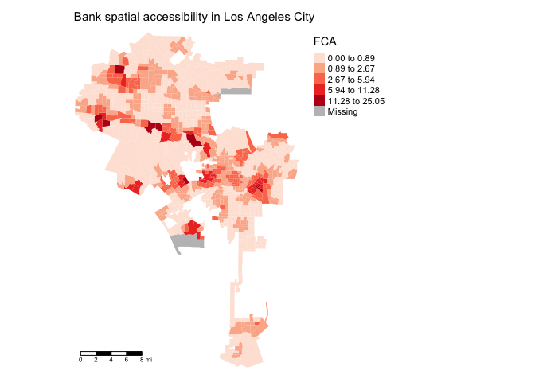
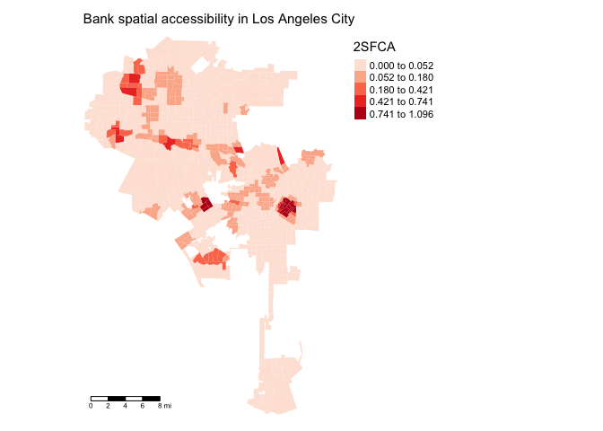

Lab 5a: Spatial Accessibility
CRD 230 - Spatial Methods in Community Research
Professor Noli Brazil
February 2, 2021
Spatial accessibility broadly refers to the ease with which residents of a given neighborhood can reach amenities. In this guide, you will learn how to estimate spatial accessibility in R using the following methods:
- Points-in-polygon
- Buffer analysis
- Distance to nearest amenity
- Floating Catchment Area
- Two-step Floating Catchment Area
Our lab example will cover spatial access to full service banks in the City of Los Angeles. There is much work examining the presence of “bank deserts”. Much of this work shows that certain neighborhoods, specifically low-income and majority-minority neighborhoods, are spatially inaccessible to a nearby financial institution. What are the consequences? Residents without access to banking services often do not have a savings account to save for their future. They are unable to access affordable credit to purchase a home, pay for higher education, or replace an older vehicle. When residents lack access to banking services they often turn to payday loans, check-cashing services, auto title loans, and other non-traditional forms of credit that charge high-interest rates and expensive fees. The methods covered in this lab follow those discussed in Handout 4. We will cover isochrone maps in Lab 5b.
Installing and loading packages
You’ll need to install the following packages in R. You only need to do this once, so if you’ve already installed these packages, skip the code. Also, don’t put these install.packages() in your R Markdown document. Copy and paste the code in the R Console.
install.packages("matrixStats")
install.packages("SpatialAcc")You’ll need to load the following packages. Unlike installing, you will always need to load packages whenever you start a new R session. You’ll also always need to use library() in your R Markdown file.
library(sf)
library(tidyverse)
library(tmap)
library(tidycensus)
library(tigris)
library(rmapshaper)
library(matrixStats)
library(SpatialAcc)Read in census tract data
We will need to bring in census tract polygon features and racial composition data using the Census API and keep tracts within Los Angeles city boundaries. The code for accomplishing these tasks is below. We won’t go through each line of code in detail because we’ve covered all of these operations and functions in prior labs. I’ve embedded comments within the code that briefly explain what each chunk is doing, but go back to prior guides (or RDS/GWR) if you need further help. Note the use of output = wide in get_acs() to start out with a wide rather than a long dataset.
#load in your Census API Key
census_api_key("YOUR API KEY GOES HERE")# Bring in census tract data.
ca.tracts <- get_acs(geography = "tract",
year = 2019,
variables = c(tpop = "B01003_001", tpopr = "B03002_001",
nhwhite = "B03002_003", nhblk = "B03002_004",
nhasn = "B03002_006", hisp = "B03002_012",
medinc = "B19013_001"),
state = "CA",
survey = "acs5",
output = "wide",
geometry = TRUE)
# Make the data tidy, calculate percent race/ethnicity, and keep essential vars.
ca.tracts <- ca.tracts %>%
mutate(pnhwhite = nhwhiteE/tpoprE, pnhasn = nhasnE/tpoprE,
pnhblk = nhblkE/tpoprE, phisp = hispE/tpoprE) %>%
rename(tpop = tpopE, medinc = medincE) %>%
dplyr::select(c(GEOID,tpop, pnhwhite, pnhasn, pnhblk, phisp, medinc))
# Bring in city boundary data in CA
pl <- places(state = "CA", year = 2019, cb = TRUE)
# Keep LA city
la.city <- filter(pl, NAME == "Los Angeles")
#Clip tracts using LA boundary
la.city.tracts <- ms_clip(target = ca.tracts, clip = la.city, remove_slivers = TRUE)
#reproject to UTM NAD 83
la.city.tracts.utm <-st_transform(la.city.tracts,
crs = "+proj=utm +zone=11N +datum=NAD83 +ellps=GRS80")Read in the bank data
Let’s next bring in a shapefile of full-service banks and credit unions in Los Angeles as of 2020. I zipped up the file and uploaded it onto Github. Use the following code to download and unzip the file.
download.file(url = "https://raw.githubusercontent.com/crd230/data/master/los_angeles_banks.zip", destfile = "los_angeles_banks.zip")
unzip(zipfile = "los_angeles_banks.zip")Don’t worry if you don’t understand these commands - they are more for you to simply copy and paste so that you can download files that I zipped up and uploaded onto GitHub. You can look at the help documentation for each function if you are curious. Bring the data into R using st_read().
banks <-st_read("los_angeles_banks.shp")The data are already in a spatial format, but if they came in street addresses or latitudes and longitudes, you would follow the methods described in Lab 4a to convert them to a spatial format.
Bank branch data come from the Federal Deposit Insurance Corporation. A bank branch is a physical location of a banking corporation, such as Chase, Bank of America or Wells Fargo. These buildings are technically referred to as “brick-and-mortar” branches, and they provide face-to-face service for customers of a bank. Credit union branch data come from the National Credit Union Administration. A credit union is a nonprofit financial institution that’s owned by the people who use its financial products. Credit union members can access the same kinds of products and services as offered by a traditional bank, such as credit cards, checking and savings accounts and loans. Members elect a board of directors to manage the credit union to ensure that their best interests are represented.
Take a look at the data
glimpse(banks)## Rows: 616
## Columns: 8
## $ name <chr> "MUFG Union Bank, National Association", "MUFG Union Bank, Na…
## $ Address <chr> "120 South San Pedro Street", "3060 Crenshaw Boulevard", "143…
## $ City <chr> "Los Angeles", "Los Angeles", "Panorama City", "Woodland Hill…
## $ State <chr> "CA", "CA", "CA", "CA", "CA", "CA", "CA", "CA", "CA", "CA", "…
## $ zipcode <chr> "90012", "90016", "91402", "91367", "91436", "90012", "90008"…
## $ deposits <dbl> 279.954, 63.514, 112.858, 289.353, 234.795, 149.829, 51.791, …
## $ creditu <dbl> 0, 0, 0, 0, 0, 0, 0, 0, 0, 0, 0, 0, 0, 0, 0, 0, 0, 0, 0, 0, 0…
## $ geometry <POINT [m]> POINT (385459.1 3768403), POINT (376750.7 3765979), POI…Make sure the tract and bank Coordinate Reference Systems are the same and in UTM.
st_crs(la.city.tracts.utm)$proj4string## [1] "+proj=utm +zone=11 +datum=NAD83 +units=m +no_defs"st_crs(banks)$proj4string## [1] "+proj=utm +zone=11 +datum=NAD83 +units=m +no_defs"Let’s map the banks on top of the city’s tracts using our pal tm_shape()
tm_shape(la.city.tracts.utm) +
tm_polygons() +
tm_shape(banks) +
tm_dots(col = "red")
Points in polygon
In its most basic form, spatial accessibility factors in the supply of an amenity, the demand for that supply, and the distance facilitating or impeding the linkage between supply and demand. A simple approach to measuring spatial access is to count the number of amenities located within neighborhood boundaries. We already covered how to do this in Lab 4a. To get the count of banks by census tract, we use st_join() to perform a spatial join of the banks to the tracts and then group_by() and sumarize() to execute the count.
la.city.tracts.banks <- banks %>%
st_join(la.city.tracts.utm) %>%
group_by(GEOID) %>%
summarize(banks = n()) We’ll join la.city.tracts.banks back to the original tract file. We have to first drop la.city.tracts.banks’s geometry because you cannot join two sf objects together using left_join().
la.city.tracts.banks <- st_drop_geometry(la.city.tracts.banks)Now, use left_join() and assign a 0 to tracts with no banks using the replace_na() function within mutate().
la.city.tracts.utm <- la.city.tracts.utm %>%
left_join(la.city.tracts.banks, by = "GEOID") %>%
mutate(banks = replace_na(banks, 0))The number of banks represents the supply. Distance is captured by banks residing within tract boundaries. The demand can take on many forms, but one common proxy is the resident population size. Let’s calculate the number of banks per resident population, multiplying the ratio by 10,000 to get more meaningful accessibility ratio sizes.
la.city.tracts.utm<-la.city.tracts.utm %>%
mutate(banksperpop = (banks/tpop)*10000)What does the distribution of this variable look like?
summary(la.city.tracts.utm$banksperpop)## Min. 1st Qu. Median Mean 3rd Qu. Max. NA's
## 0.000 0.000 0.000 1.783 0.000 105.263 4Let’s create a choropleth map of banks per 10,000 population.
tm_shape(la.city.tracts.utm, unit = "mi") +
tm_polygons(col = "banksperpop", style = "jenks",palette = "Reds",
border.alpha = 0, title = "Banks per\n10k population") +
tm_scale_bar(position = c("left", "bottom")) +
tm_layout(main.title = "Bank spatial accessibility in Los Angeles City",
main.title.size = 0.95, frame = FALSE,
legend.outside = TRUE, legend.outside.position = "right") 
Point proximity buffers
The points-in-polygon approach treats neighborhood boundaries as impermeable as if banks right outside boundary lines are unreachable to residents. Another approach to measuring access is to capture distance from the nearest amenities. There are several ways to account for distance. One method involves counting the number of amenities within r miles of the neighborhood. The number of amenities within r refers to the cumulative opportunity, or, in other words, to the availability provided by the immediate surroundings.
The process involves generating a circle with a radius r (i.e. a circular buffer of size r) around existing geographic features. You connect other features to the points based on whether they fall inside or outside the boundary of the buffer. The buffer defines this filtering window as that location’s catchment area. Accessibility is measured as the ratio of amenities to residents (or supply to demand) located within the buffer.
The first task is to create buffers of radius r around each neighborhood. We draw a buffer around the neighborhood centroid, which is the point on the middle of a tract. To generate centroids, use the sf function st_centroid()
tract.centroids <- st_centroid(la.city.tracts.utm)Plot the centroids on top of the tracts so we know what we produced
tm_shape(la.city.tracts.utm) +
tm_polygons(col = "blue") +
tm_shape(tract.centroids) +
tm_dots(col = "red")
We then create circular buffers of distance r around each tract’s centroid. The size of the buffer radius depends on the city you are examining and the context of your question. To start, let’s use 1-mile or 1609-meter buffers.
We use the sf function st_buffer() to create buffers. The required arguments are your sf object and the distance dist =. Remember that the units for UTM is meters, so specifying dist = 1609 means 1609 meters.
tract.buff <-st_buffer(tract.centroids, dist = 1609)
tract.buffYou’ll see that tract.buff is a polygon object like a census tract. To be clear regarding what a buffer is, let’s extract one tract, GEOID = 06037262501 , and its 1-mile buffer.
ex1 <- filter(tract.buff, GEOID == "06037262501")
ex2 <- filter(la.city.tracts.utm, GEOID == "06037262501")And let’s map it onto tracts with the banks.
tmap_mode("view")
tm_shape(la.city.tracts.utm) +
tm_polygons() +
tm_shape(tract.centroids) +
tm_dots(size = 0.01) +
tm_shape(ex1) +
tm_borders(col="red") +
tm_shape(ex2) +
tm_dots(col = "red") The tract we are mapping is located in the West Los Angeles area along the coast. If you zoom in, you’ll see that the centroid is right in the middle of the tract and the buffer is a one-mile circle surrounding the tract. The buffer contains not just tract 06037262501, but touches other nearby tracts.
We want to count the number of banks located within the buffers. Remember that tract.buff is a polygon. Counting the number of banks inside a buffer is a points-in-polygons operation, which we already did above. We’ll calculate the number of banks per 10,000 resident population.
buff.banks <- banks %>%
st_join(tract.buff) %>%
group_by(GEOID) %>%
summarize(banks1m = n())
buff.banks <- st_drop_geometry(buff.banks)
la.city.tracts.utm <- la.city.tracts.utm %>%
left_join(buff.banks, by = "GEOID") %>%
mutate(banks1m = replace_na(banks1m, 0)) %>%
mutate(banksbuff1m = (banks1m/tpop)*10000)We can then use summarize() to find the mean number of banks that occur within 1 mile of a tract.
la.city.tracts.utm %>%
summarize(Mean = mean(banks1m, na.rm=TRUE)) %>%
st_drop_geometry()## Mean
## 1 6.903904There are on average 6.9 banks within 1 mile of tracts in Los Angeles. This is likely not representative given that there are a small number of tracts with a lot of banks within a 1-mile radius, as demonstrated by the histogram below (the tract with 70+ banks is in the financial district). It’s common practice to test the sensitivity of your results by choosing different buffer sizes.
ggplot(la.city.tracts.utm) +
geom_histogram(mapping = aes(x=banks1m), na.rm = TRUE) +
xlab("Banks in Los Angeles Tracts")
Let’s create a choropleth map of banks per population within a 1-mile radius.
tmap_mode("plot")
tm_shape(la.city.tracts.utm, unit = "mi") +
tm_polygons(col = "banksbuff1m", style = "jenks",palette = "Reds",
border.alpha = 0, title = "Banks per\n10k population") +
tm_scale_bar(position = c("left", "bottom")) +
tm_layout(main.title = "Bank spatial accessibility in Los Angeles City",
main.title.size = 0.95, frame = FALSE,
legend.outside = TRUE, legend.outside.position = "right")
Distance to nearest bank
We limit ourselves a bit by capturing banks just within a radius distance. Why not calculate the distance to all banks and summarize that distribution? Distance is typically measured in Euclidean distance. Euclidean distance, also referred to as straight-line distance or “as the crow flies,” is the distance between two points connected by a straight line on a flat surface. To calculate the distance (in meters) from each tract’s centroid to each bank we use the sf function st_distance().
bank.dist<-st_distance(tract.centroids, banks)For the object bank.dist, the rows represent the tracts and the columns are the banks. You can check this by comparing dimensions
#number of tracts is 999
dim(tract.centroids)## [1] 999 10#number of banks is 622
dim(banks)## [1] 616 8#999 by 622
dim(bank.dist)## [1] 999 616What we have with bank.dist is a distance matrix. That is, we have each tracts’s distance to each bank. Note that st_distance() will calculate distance using the Coordinate Reference System’s units, in this case meters. A common spatial accessibility measure is the distance to the closest amenity (e.g. nearest bank). It allows one to evaluate the immediate proximity to the bank. We can use the function rowMins() in the package matrixStats to calculate the shortest distance.
The function rowMins() does exactly what you think it would do - get the minimum value across columns for each row. For bank.dist, this means we get the minimum distance to a bank for each neighborhood. Note that the order of tracts in bank.dist is the same as in la.city.tracts.utm. Therefore, we can run rowMins() within mutate() to save the resulting value in our main data set la.city.tracts.utm.
la.city.tracts.utm <- la.city.tracts.utm %>%
mutate(bankmin = rowMins(bank.dist))We can use summarize() to find the mean minimum distance to banks.
la.city.tracts.utm %>%
summarize(meanmin = mean(bankmin, na.rm=TRUE)) %>%
st_drop_geometry()## meanmin
## 1 1135.956The closest bank to a neighborhood in Los Angeles is on average 1,136 meters, or about 3/4 a mile.
Let’s create a choropleth map of nearest bank distance.
tm_shape(la.city.tracts.utm, unit = "mi") +
tm_polygons(col = "bankmin", style = "jenks",palette = "Reds",
border.alpha = 0, title = "Distance to nearest \nbank (m)") +
tm_scale_bar(position = c("left", "bottom")) +
tm_layout(main.title = "Bank spatial accessibility in Los Angeles City",
main.title.size = 0.95, frame = FALSE,
legend.outside = TRUE, legend.outside.position = "right")
Rather than calculating the distance to the nearest amenity, another approach is to measure the mean distance to the n closest services. This approach conceptualizes accessibility as the average cost to reach a diversity of options rather than a single option.
Floating Catchment Area
The Floating Catchment Area (FCA) method extends the buffer approach by incorporating the demand of other nearby tracts for an amenity. Similar to the basic buffer approach, FCA draws a circle (or buffer) of radius d around a tract’s centroid and defines this filtering window as that location’s catchment area. In contrast to the simple buffer method, FCA accounts for not just the number of amenities that fall inside the buffer, but also the centroids of other nearby tracts. The method accounts for competition for services among residents in other neighborhoods (competing demand).
We’ve already calculated the FCA numerator in the buffer analysis (banks1m). We apply the buffer analysis to count tract centroids tract.centroids rather than banks within a 1 mile buffer of each tract tract.buff. We sum up the populations of tracts whose centroids fall in each buffer.
buff.tracts <- tract.centroids %>%
select(tpop) %>% #we don't need other variables
st_join(tract.buff) %>%
group_by(GEOID) %>%
summarize(buffpop = sum(tpop.x)) %>%
ungroup()
buff.tracts <- st_drop_geometry(buff.tracts)The variable buffpop in buff.tracts reflects the total population of tracts whose centroids fall into a tract’s 1-mile buffer. We join this variable back into our main tibble.
We next create the variable fca by dividing the number of banks in the buffer’s tract by the tract’s population and the population of nearby tracts whose centroids fall inside the buffer. We multiply by 10,000 to make it a per 10,000 population rate.
la.city.tracts.utm <- la.city.tracts.utm %>%
left_join(buff.tracts, by = "GEOID") %>%
mutate(buffpop = replace_na(buffpop, 0)) %>%
mutate(fca = (banks1m/buffpop)*10000)Map it. Higher values indicates greater spatial accessibility.
tm_shape(la.city.tracts.utm, unit = "mi") +
tm_polygons(col = "fca", style = "jenks",palette = "Reds",
border.alpha = 0, title = "FCA") +
tm_scale_bar(position = c("left", "bottom")) +
tm_layout(main.title = "Bank spatial accessibility in Los Angeles City",
main.title.size = 0.95, frame = FALSE,
legend.outside = TRUE, legend.outside.position = "right")
.
Two-step Floating Catchment Area
The basic Floating Catchment Area method calculates access strictly from the demand (resident population) perspective. The method does not take into account the service area of the supplier (bank). The two-step Floating Catchment Area (2SFCA) method remedies this issue by calculating catchment areas for both supplier and consumer.
To calculate 2SFCA ratios, we use the function ac() which is part of the SpatialAcc package. There are five inputs you need to supply ac(). First, a matrix of distances between tracts to banks. We already did that above when we constructed bank.dist, but the resulting object is not a matrix, but has class “units”
class(bank.dist)## [1] "units"Let’s instead use the function distance() which is part of the SpatialAcc package. In order to use this function, you will need to first get the coordinates of the tract centroids and banks. Use the sf function st_coordinates().
centroid.coords <- st_coordinates(tract.centroids)
bank.coords <- st_coordinates(banks)Then plug these into the function distance(), specifying type = "euclidean" to calculate euclidean distances.
dist.matrix <- distance(centroid.coords, bank.coords, type = "euclidean")
class(dist.matrix)## [1] "matrix" "array"In addition to the distance matrix, we also need to specify measures of demand p and supply n in the function ac(). The measures we’ve used so far proxy the demand for banks as total resident population. What about supply? In the basic Floating Catchment Area method, we treated every bank equally. In other words, we assumed that capacity and quality are equal across banks. This is likely not true. One measure of bank capacity (less about quality) is the number of its deposits in dollars. This is measured by the variable deposits in the file banks, which measures the amount of deposits in millions. Plug these demand and supply values into ac() to get 2SFCA measures of accessibility.
TSFCA <- ac(p = la.city.tracts.utm$tpop,
n = banks$deposits,
D = dist.matrix, d0 = 1609, family = "2SFCA")We also had to specify the threshold distance that defines the catchment area (like the buffer radius r). Here, we use 1609 meters, or one mile. The resulting object is a vector of 2SFCA values. Save the results in la.city.tracts.utm.
la.city.tracts.utm <- la.city.tracts.utm %>%
mutate(TSFCA = TSFCA)Then mapificate
tm_shape(la.city.tracts.utm, unit = "mi") +
tm_polygons(col = "TSFCA", style = "jenks",palette = "Reds",
border.alpha = 0, title = "2SFCA") +
tm_scale_bar(position = c("left", "bottom")) +
tm_layout(main.title = "Bank spatial accessibility in Los Angeles City",
main.title.size = 0.95, frame = FALSE,
legend.outside = TRUE, legend.outside.position = "right")
Higher values of TSFCA equals greater spatial access.

This work is licensed under a Creative Commons Attribution-NonCommercial 4.0 International License.
Website created and maintained by Noli Brazil